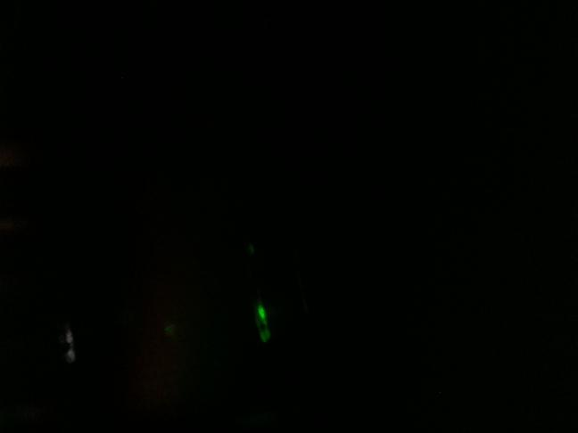
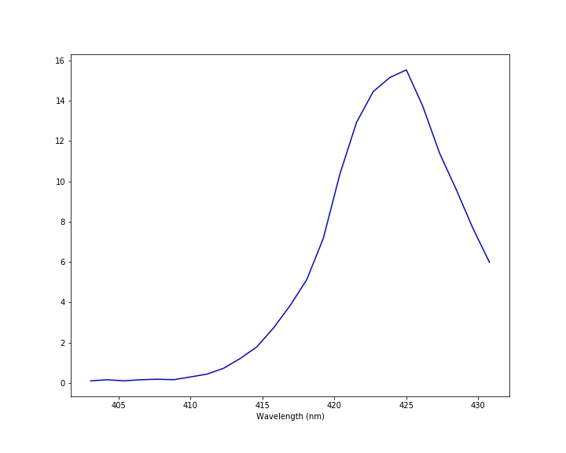

Lego SpectrometerMeasurement taken on 20211210-025100Scientist: ArabellaLight source: Laser pointer Transmission sample: None Exposure: 10000000 µsec Experiment notesI'm attempting to figure out what the laser pointer normally looks like. |
ImagesRaw imageProcessed imageSpectrum |
DataDownload data - spectrum-20211210-025100.csv |